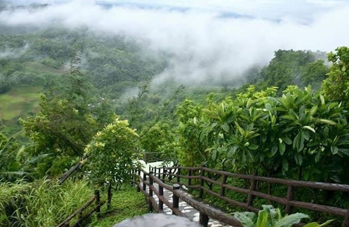
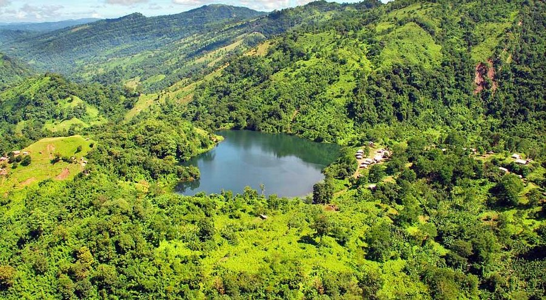
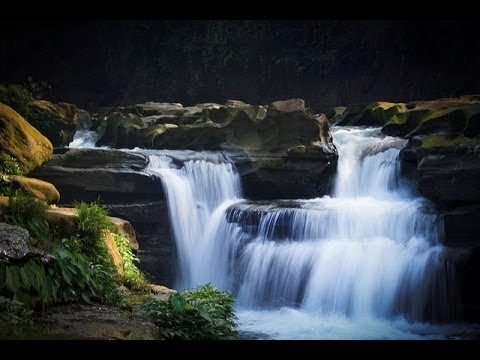

Featured Attractions

Cox's Bazar
The world's longest sandy beach

Bandarban
Bangladesh's hill paradise

Saint Martin
Bangladesh's only coral Island

Boga Lake
A mysterious blue lake in the hills

Nafakhum Waterfall
One of the largest waterfalls in Bangladesh.

Shah Amanat Bridge
A key bridge linking Chittagong to the south.